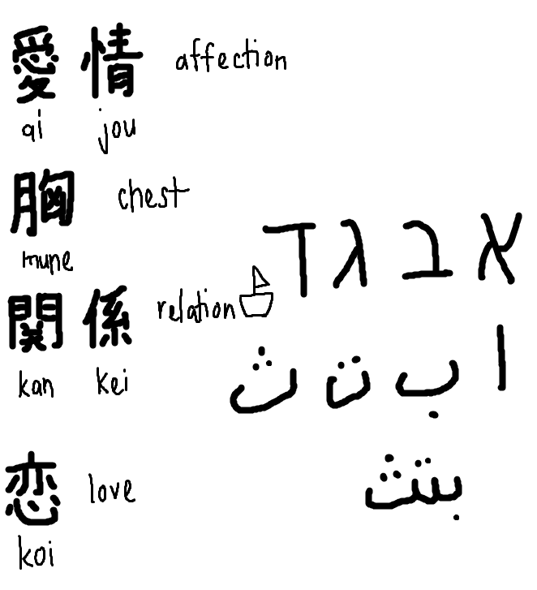

Anata ga inakute sabishii desu...
29th November 2024
Assalamualaikum and peace be upon you!
Friday. Finished Duolingo Japanese Kanji Section 4, Unit 14: Express feelings
For those who are not learning Japanese, you might wonder the meaning of the title. This is how you would write it in Japanese:
あなたがいなくて寂しいです
Now you can translate that, can you? 😉
Note: Some people might pronounce sabishii as samishii...it means the same, it's just more nasal. Just like how some people will pronounce "ga" particle as "nga".
This is what I learned on 24th. "Sabishii" and "koi", both meaning "lonely" and "love" respectively. So now you know the meaning of "sabishii". Now what does the whole sentence mean? Let's analyze it word-by-word:
- あなた (anata), meaning "you" alongside other words that can also mean you like "kimi", "omae", etc.
- が (ga), which is a grammar particle and it can be long to explain here. To be simple, "ga" is more focused on identifying or specifying the subject, especially when introducing new information.
- いなくて (inakute), which actually comes from inai/imasen, meaning "there is no (sth)", or "not having (sth)" but with -te ending because the sentence is not completed yet
- 寂しい (sabishii) as you already know
- です (desu), which is another grammar particle that connects the subject to the predicate like how "is", "am", "are" work in English (simply said).
anata ga inakute sabishii desu
Literal: there is no you, (I am) lonely
Meaning: I miss you. 😥
Note: Forget the two characters (精 and 冗) at the bottom in the picture 😆. They are not complete (like me without you? え~).

Going to the 26th, the characters are:
- 愛情 (aijou) = affection
- 胸 (mune) = chest
- 関係 (kankei) = relationship
- 恋 (koi) = love 💖
P/S: Yeah, we've met "koi" the other day! And ignore the Hebrew and Arabic scripts there. I was chatting with a person from Poland (夜暗-san) in the live room about languages and he found Semitic language like Arabic interesting! I was telling him/her about how Arabic letters can be connected unlike Hebrew which stays separate.
Let's go to the 27th:
I guess there's a few repetition from the previous day:
- 胸 (むね)
- 関係 (かんけい)
And some new characters:
- 互い (tagai) = each other, one another 🤼
- 怒る (okoru) = to be angry 😡
- 恐れる (osoreru) = to be afraid 😨
- 触る (sawaru) = to touch 👈
P/S: Ignore all the Arabic letters. I was chatting with a viewer (ラビドライオン１１) in the live room about how he thinks that Indonesian sounds like Arabic. Then, I proceed to tell the sounds that do not exist in Indonesian but exist in Arabic (in the picture).
Let's move on to the 28th:
- 恥ずかしい (hazukashii) = to be embarrassed 😳
- 驚く (odoroku) = to be surprised 🙀
P/S: 😂 Ignore the picture I drew as we were chatting in the live room. NoOne (literally her username) was talking about her drawing.
Let's dive into today's (29th November 2024) lesson:
- Comparing 驚く (odoroku = to be surprised) with the previously learned 警察 (keisatsu = police) where they share the same top radicals!
- Comparing 触る (sawaru = to touch) with the previously learned 角 (kado = corner) where "kado" can be found inside the kanji for "sawaru"!
- Comparing 関係 (kankei = relationship) with the previously learned 孫 (mago = grandchild) where they share the same radical on the right-side!
P/S: 関係ない (kankeinai) is a common phrase to say that something is irrelevant to the topic discussed or "it doesn't matter". I guess you can say all the drawings and other languages that we talked about during the live room is "kankeinai" here. 🤣
Shout out to Katerina-san for the gift (GG, TikTok 🎵, Rose 🌹, Fest Burst 🎉, Ice Cream Cone 🍧)! and Dylan for the Rose 🌹. ありがとうございました！
I think that's it for this entry. またね~ 👋